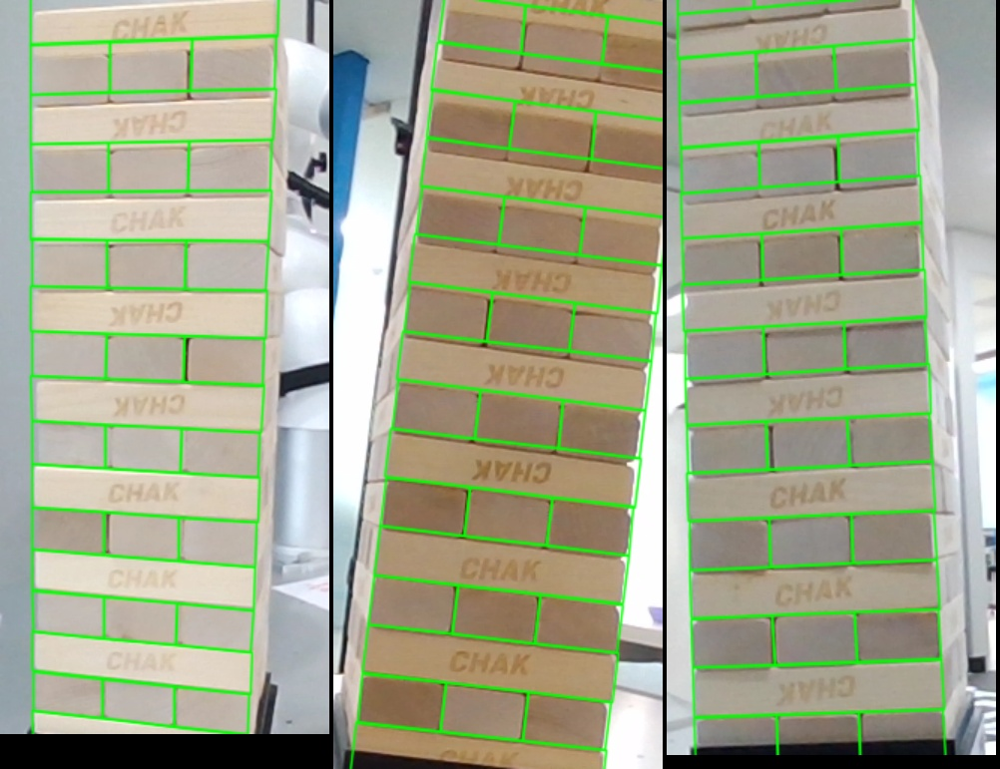
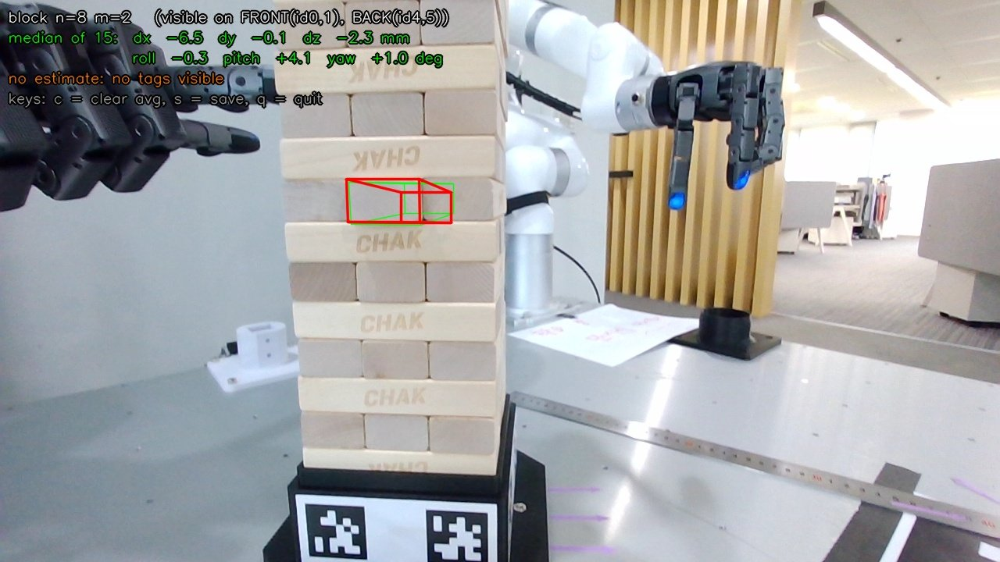

CES2027 · JENGA_6DOF · 2026-10-21 ~ 10-22
젠가 블록 6DOF 편차 추정: 진행 보고서
xArm7 ×2 + Allegro V6F ×2 젠가 시연에서, n층 m번째 블록이 “깔끔하게 쌓은 기준 상태” 대비 얼마나 밀리고 돌아갔는지를 Orbbec Gemini 305 RGB-D로 추정한다. 이번 세션은 손으로 카메라를 들고 측정하는 단계(M0~M2)까지 진행했다.
1. 한눈에 보기
블록 밀기 dx (8층 2번)
±0.5 mm
실제 0/5/10 → 0/4.5/9.8 mm
블록 회전 yaw (9층 1번)
±0.6°
−2.5° → −2.0°, −5.0° → −4.4~−5.5°
2~17층 커버리지 (REL)
±2 mm · ±2°
정리 상태, 측정 실패 없음
기준 대비 절대값 (ABS)
±1 → ±7 mm
아래층 → 위층, 손 촬영 한계 → M3에서 해결


2. 목표와 전제
- 목표: “n층 m번째 블록을 빼라” 명령 시, 그 블록이 기준 대비 얼마나 틀어졌는지(dx, dy, dz, roll, pitch, yaw)를 로봇에 전달.
- 핵심 아이디어: 타워는 매번 정리해서 시작하므로 기준 자세는 하드코딩하고, 카메라로는 기준에서의 편차만 보정한다 (탐지 문제 → 보정 문제).
- 물리적 제약: 블록은 아래층 위에 놓여 z·roll·pitch는 거의 변하지 않는다. 실제로 변하는 것은 긴 방향 밀림(dx), 옆 밀림(dy), 수평 회전(yaw). → roll/pitch/dz는 강한 사전값으로 붙잡고 검증용으로만 출력.
하드웨어 / 환경
| 항목 | 내용 |
|---|---|
| 카메라 | Orbbec Gemini 305 (USB), 컬러 1280×720, depth 1280×800, 프리셋 Close Range High Accuracy |
| 블록 | 약 115 × 38 × 23 mm (fit 높이 22.36 mm), 17층, 층당 3개 밀착 |
| 지그 | 검은 박스(옆면 약 125 × 50 mm) 위 타워, 1층은 테두리에 반쯤 가려짐 |
| 태그 | AprilTag 36h11, 36 mm, 박스 네 옆면에 2개씩 띠 (118 × 46 mm, 중심 간격 72 mm) |
| SW | Python 3.10 venv, pyorbbecsdk2 2.1.2, OpenCV 4.11, Open3D 0.18, ROS2 Humble |
좌표 / 번호 규칙
- 앞면 = 태그 id 0·1 띠 면. 위에서 봤을 때 시계방향으로 오른쪽(2·3), 뒤(4·5), 왼쪽(6·7).
- n = 1(맨 아래) … 17. 홀수층은 앞에서 긴 면이 보이고 m=1이 가장 앞. 짝수층은 앞에서 끝면이 보이고 m=1이 왼쪽.
- 타워 좌표계: 원점 = 중심축 & 1층 바닥, +x 오른쪽, +y 뒤쪽, +z 위.
- 블록 좌표계 (결과 delta 기준): x = 긴 방향, y = 폭, z = 위. 홀수층 블록 +x = 타워 오른쪽, 짝수층 블록 +x = 타워 뒤쪽. 예: 짝수층 블록을 앞으로 빼면 dx 음수.
3. 진행 과정
M0. 카메라 연결
- venv 구성,
pyorbbecsdk2설치, USB udev 규칙 설치. - 컬러 / color 정렬 depth 스트림 확인 (
tools/stream_check.py). - 왜곡 모델이 8계수 rational임을 발견 → 5계수만 쓰던 코드 수정.
M1-1. 태그 맵 캘리브레이션
타워를 한 바퀴 돌며 두 면의 태그가 동시에 보이는 모서리 뷰 43장을 자동 저장하고, 띠(태그 2개)를 강체로 보고 카메라 자세 + 면 자세를 번들 조정.
| 지표 | 값 | 기대 |
|---|---|---|
| 재투영 RMS | 0.67 px (최대 5.2) | < 1 px |
| 이웃 면 사이 각도 | 89.93 ~ 90.13° | 90° |
| 마주보는 면 사이 각도 | 179.41 ~ 179.50° | 180° |
| 마주보는 띠 평면 간격 | 130.7 / 131.6 mm | 박스 폭 + 종이 |
M1-2. 기준 타워 위치 맞추기
수평 위치·방향은 지그에 끼워진 타워이므로 네 띠 평면의 중심에서 계산. 높이는 정리된 타워 사진 20장에서 층 사이 어두운 틈과 모델 층 경계가 맞아떨어지는 1층 바닥 높이 z0와 블록 높이 h를 탐색.
| 결과 | 값 | 비고 |
|---|---|---|
| 1층 바닥 높이 | 띠 중심 + 27.0 mm | 바닥에서 ≈ 50 mm = 실측 박스 높이와 일치 |
| 블록 높이 | 22.36 mm | 공칭 23 mm로 두면 17층에서 약 11 mm 누적 오차 |
| 탐색 프로파일 | 단일 피크 | 한 층 어긋남 같은 모호성 없음 |
M2. 블록 6DOF 추정 + 실시간 도구
추정 파이프라인 (estimator.py)
- 태그로 카메라 자세 (대략, mm 단위 오차)
- 국소 보정: 위아래 층(n±1, n±2) 바깥 면을 depth에 맞춰 카메라 자세 보정 (목표 블록 중심 기준, 사전값 ±6 mm/±2°)
- 블록 fit: 보이는 면 depth(테두리 5 mm 제외) + 윤곽의 밝기 기울기 + roll/pitch/dz 사전값을 IRLS로 최소화, 면 법선 방향 오프셋은 depth만으로 재계산
- REL(위아래 층 대비) / ABS(기준 대비) 두 결과
- 보이는 면 종류별 실험 1σ 하한으로 신뢰도 부여
실시간 도구 (live_block.py)
- 터미널
n m입력 → 기준(초록)/추정(빨강) 윤곽 + ABS·REL 6DOF 표시 - 최근 15개를 축별 가중 중앙값으로 합산 (yaw는 긴 옆면 시점이 주도)
- 측정 프레임·depth·결과 자동 녹화 +
label - ROS2:
/jenga/block_pose,/jenga/block_nominal_pose,/jenga/block_delta(ABS),/jenga/block_delta_rel(REL)
4. 정확도 결과
모든 실측은 손으로 들고 25~35 cm (위층은 40~45 cm), 15개 이상 합산 기준.
블록 밀기: 8층 2번 dx
실제 당김 대비 측정 크기 (mm)
최종 (새 센서 설정)구 설정 (약 70~80%)점선 = 이상적
블록 회전: 9층 1번 yaw
기대 회전 대비 측정 크기 (°, 정리 상태 대비)
측정 (10 mm는 재측정 범위 4.4~5.5°)1차 10 mm
4.1 블록 밀기: 8층 2번 (가운데 블록, 끝면만 보임)
| 실제 당김 | 1차 (구 설정, 자 대충) | 2차 (구 설정) | 최종 (새 센서 설정) |
|---|---|---|---|
| 0 mm | −0.6 | −0.5 | 0.0 |
| 5 mm | −6.5 | −3.9 | −4.5 |
| 10 mm | −9.4 | −7.8 | −9.8 (앞 −9.8 / 뒤 −10.2) |
4.2 블록 회전: 9층 1번 (바깥 블록, 긴 옆면 보임)
| 오른쪽 끝 당김 | 기대 yaw | 측정 yaw | 기대 dy | 측정 dy |
|---|---|---|---|---|
| 5 mm | −2.5° | −2.0° | −2.5 mm | −2.0 mm |
| 10 mm (1차) | −5.0° | −2.9° | −5 mm | −3.1 mm |
| 10 mm (재측정 2회) | −5.0° | −4.4 ~ −5.5° | −5 mm | −4.0 ~ −4.8 mm |
1차 10 mm는 depth 원본에서도 오른쪽 끝이 약 6 mm만 나와 있어 실제로 덜 당겨진 것으로 판단. 재측정 시 자로 잰 양 끝 값은 아직 미수령이며, 받으면 최종 비교 예정. 정리 상태에서 이 블록은 원래 약 −1.1° 틀어져 있었다.
4.3 높이별 커버리지 (정리 상태: 모두 0 근처가 정상)
| 블록 | 위치 | REL | ABS | 판정 |
|---|---|---|---|---|
| 2층 2번 | 맨 아래 | dx +0.8, dy −0.5, dz −1.2 mm, 각도 ±0.5° | dx +0.7, dy −0.6, dz −1.2 mm | 둘 다 정상 |
| 8층 2번 | 중간 | 0.0 mm | +2.9 mm (실제 타워가 약 3 mm 뒤, 기준 사진에서도 동일) | 정상 |
| 16층 2번 | 위 | dx −0.3, dy −0.1, dz −0.6 mm, yaw +1.7° | dx 앞 +6.9 / 뒤 −4.1 (시점별 부호 반대) | ABS 흔들림 |
| 17층 1번 | 맨 위 | dx −1.0, dy −0.2, dz +0.1 mm, 각도 ±1° | dy +3.8 mm | ABS 흔들림 |
4.4 보이는 면에 따른 정확도 (기준 사진 45~50 cm, 단일 프레임)
| 보이는 면 | dx | yaw |
|---|---|---|
| 끝면만 (폭 38 mm) | ±3.8 mm | ±6.7° |
| 끝면 + 긴 옆면 (115 mm) | ±2.1 mm | ±2.3° |
끝면은 1° 돌아가도 양쪽 depth 차이가 0.66 mm뿐이라 yaw가 약하다. 긴 옆면은 같은 1°에 2 mm 차이. 다중 프레임 합산과 25~35 cm 근접으로 실측은 4.1~4.3까지 개선.
4.5 블록 종류별 예상 오차 (손 촬영, 합산 기준)
| 축 | 가운데 블록 (m=2) | 바깥 블록 (m=1, 3) | 근거 |
|---|---|---|---|
| dx (긴 방향) | ±1 mm | ±1 mm (예상) | 가운데 실측 |
| dy (옆) | ±1.5 mm | ±1 mm | 바깥 실측 |
| dz | ±1.5 mm | ±1.5 mm | 정리 상태 확인 |
| yaw | ±2° (실회전 미검증) | ±0.6~1° | 바깥 실측 |
| roll / pitch | ±1~2° (“평평” 가정) | ±1~2° | 사전값 |
| ABS 추가 오차 | 아래층 ±1 mm ~ 위층 ±4~7 mm | 태그 거리 | |
5. 문제와 해결
| # | 문제 | 원인 | 해결 |
|---|---|---|---|
| 1 | SDK가 카메라를 열지 못함 | USB udev 규칙 미설치 | 규칙 복사 + udevadm 재로드 |
| 2 | 왜곡 보정 값 이상 (k1 = −1.08) | 8계수 rational 모델인데 5계수만 사용 | OpenCV rational 8계수 사용 |
| 3 | 박스 높이 5 cm라 큰 태그 불가 | 지그 크기 | 36 mm 태그 2개 띠 → 인쇄로 간격 고정, 정확도도 향상 |
| 4 | depth와 태그 모델이 면마다 ±5 mm 불일치 | 먼 거리의 작은 태그 자세 오차 + depth 노이즈 | 위아래 층 면으로 국소 보정 |
| 5 | 국소 보정 발산 (10~250 mm) | 카메라 원점 기준 회전, 반복 패턴에 잘못 맞춤 | 목표 블록 중심 기준, depth만 사용, 사전값 제한 |
| 6 | roll/pitch 50° 이상 튐 | Huber가 사전값 항까지 약화 | IRLS: robust 가중치는 데이터 항에만 |
| 7 | 경계선 검출 실패 | 틈 대비 약함, 각인/배경이 더 강함 | 윤곽 법선 방향 밝기 기울기, 흐림→선명 2단계 |
| 8 | 블록을 뺄수록 pitch 증가 (4~6°) | 튀어나온 끝면 위쪽 테두리 depth가 뒤 면과 섞임 | 면 테두리 5 mm 제외 → 3.7° → 1.2° |
| 9 | 측정값이 실제의 70~80% | (a) 경계선 항이 안쪽 선에 끌림 (b) 센서가 작은 단차를 뭉갬 | (a) 법선 오프셋은 depth만 (b) depth 1280×800 + Close Range High Accuracy → 10 mm가 9.8 mm로 |
| 10 | 뒤에서 본 값이 크게 틀림 (yaw +10°) | 안쪽으로 들어간 끝면은 구멍 벽에 가려 depth 비대칭 | 들어간 끝면 측정의 신뢰도 하향 |
| 11 | 합산 시 엉뚱한 yaw가 섞임 | 계산상 1σ가 실제보다 너무 작음 | 보이는 면 종류별 실험 1σ 하한 + 축별 가중 중앙값 |
| 12 | 위아래 층이 같이 밀리면 측정에서 사라짐 | 국소 보정이 이웃 층을 기준으로 가정 | ABS / REL 분리: 태그 오차는 시점마다 달라 상쇄, 실제 이동은 남음 |
| 13 | 저장 사진이 쓸모없음 | 수동 저장 중 카메라 이동 | 측정 프레임 자동 녹화 + 사후 재분석 도구 |
6. 층 높이별 정확도 · 개선 아이디어
| 구간 | REL (이웃 대비) | ABS (기준 대비) | 이유 |
|---|---|---|---|
| 아래층 (2~5층) | ±1~2 mm | ±1 mm 수준 | 태그와 가까워 카메라 자세 정확 |
| 중간층 (6~12층) | ±1 mm, ±1~2° | ±2~3 mm | 태그와 블록을 함께 담으려면 거리가 늘어남 |
| 위층 (13~17층) | ±1~2 mm, ±2° | ±4~7 mm | 40~45 cm로 물러나야 태그가 보임, 기준 층이 아래쪽에만 |
REL은 전 높이에서 안정적이고, ABS는 태그(맨 아래)와 블록 사이 거리에 비례해 나빠진다. 또 손으로 쌓은 “정리 상태”도 수 mm 수준으로 완벽하게 곧지 않다 (예: 8층 부근 약 3 mm 뒤쪽).
손 촬영 단계에서 (필요할 때만)
- 기준 상태 재캡처 테이블: 시연 전 정리된 타워를 훑어 블록별 실제 위치를 0으로 저장
- 중간 높이 기준점: 타워 옆 고정 스탠드에 태그 → 위층 ABS 개선
- 가운데 블록 yaw: 앞/뒤 끝면의 옆 위치를 함께 사용 → ±1° 목표
- 다중 프레임 공동 최적화: 여러 프레임의 점/경계를 한 번에 fit
로봇 장착 후 (M3)
- 카메라 자세를 FK + hand-eye로 → ABS의 태그 오차 제거 (예상 1~2 mm)
- 블록별 촬영 자세 계획: 바깥 블록은 모서리 방향, 가운데 블록은 빠져나오는 쪽 끝면
- 마름모 배치로 양팔이 블록 양 끝을 동시에 관측 → yaw·dx 강화
7. 앞으로 할 일
- 로봇 쪽과 합의: 허용 오차(몇 mm / 몇 도까지 잡을 수 있나), 인터페이스(토픽 연속 발행 vs “n층 m번 재 줘” 서비스).
- M3 손목 장착 (마운트 3D 프린팅 후): hand-eye 캘리브레이션, FK 기반 카메라 자세, 촬영 자세 계획, 태그는 보조로 유지.
- 남은 확인: yaw 10 mm 재측정의 자로 잰 양 끝 값 비교, 홀수층 블록의 옆면 밀기 테스트, 가운데 블록 실제 회전 테스트 (필요 시).
8. 사용법 · 파일 구조
# 환경 (최초 1회)
python3 -m venv --system-site-packages .venv
.venv/bin/pip install -r requirements.txt
sudo cp .venv/lib/python3.10/site-packages/pyorbbecsdk/shared/99-obsensor-*.rules /etc/udev/rules.d/
sudo udevadm control --reload && sudo udevadm trigger # 그 후 카메라 USB 재연결
# 태그 PDF (100% 크기로 인쇄)
.venv/bin/python tools/make_tag_pdf.py
# 캘리브레이션 (태그를 다시 붙였거나 지그가 움직였을 때)
.venv/bin/python tools/calib_capture.py # 모서리 4곳 각 10장 이상
.venv/bin/python tools/solve_tagmap.py # -> config/tagmap.yaml
.venv/bin/python tools/stream_check.py data/ref # 정리된 타워 정면/모서리 촬영 (s)
.venv/bin/python tools/fit_tower_ref.py # -> config/tower_ref.yaml
# 실시간 측정
.venv/bin/python tools/live_block.py # 터미널: "n m", "label X", "c", "s", "q"
# 녹화 세션 재분석
.venv/bin/python tools/analyze_session.py data/live/<세션> [...]config/tower.yaml 기준 타워 정의 (블록 치수, 층 수, 번호 규칙, 태그)
config/tagmap.yaml 태그 맵 (면 4개의 상대 자세)
config/tower_ref.yaml 태그 맵 -> 타워 좌표, fit 블록 높이
jenga6dof/camera.py Gemini 305 래퍼 (프리셋, depth 해상도, color 정렬)
jenga6dof/tower_model.py (n, m) -> 기준 4x4 자세
jenga6dof/tagmap.py 태그 띠 기하, 검출, 번들 조정
jenga6dof/localize.py 태그로 카메라 자세, 태그 맵 -> 타워 좌표
jenga6dof/estimator.py 블록 6DOF 추정 (국소 보정 + 블록 fit + 신뢰도)
jenga6dof/ros_pub.py ROS2 발행
tools/ PDF 생성, 캘리브레이션, 실시간 측정, 평가/분석
tags/ 인쇄용 태그 PDF
docs/ 이 보고서 (md / html)